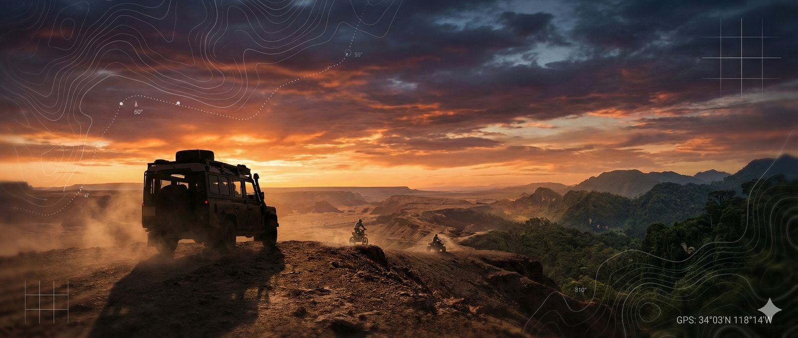
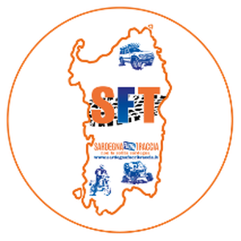

Sardegna Fuori TracciaUna panoramica, passo per passo, di tutto ciò che serve costruire.
L'obiettivo è far diventare il gestionale che già usi il motore unico anche del sito: aggiorni i viaggi una volta sola e il sito si aggiorna di conseguenza, in 5 lingue.
Il lavoro è articolato in fasi sequenziali: ognuna viene prima sviluppata e collaudata in un ambiente protetto e solo dopo, a test superati, messa online. I passi qui sotto servono a dare la misura del volume di lavoro. Il preventivo economico è fornito a parte.
Aggiungere al gestionale tutte le informazioni che oggi vivono solo sul sito:
Realizzare il "ponte" che porta sul sito solo i contenuti pubblicati, tenendo al sicuro i dati gestionali e contabili, che restano riservati.
La parte con cui aggiornerai il sito in autonomia: editor dei testi, gestione dell'itinerario giorno-per-giorno con foto (riordinabile), gallerie, campi per il posizionamento su Google, e i pulsanti Anteprima, Pubblica e Clona.
Sistema che traduce i contenuti in francese, inglese, tedesco e spagnolo, con possibilità di revisione e segnalazione automatica delle traduzioni da aggiornare.
Generazione automatica della mappa del percorso, centrata sull'area giusta, mostrando il tracciato in forma indicativa senza renderlo scaricabile.
Unione dei contatti (clienti e iscritti) in un unico elenco, invio senza duplicati, gestione dei consensi e della disiscrizione a norma di legge.
Verranno impiegati strumenti e tecnologie moderni (come da tua richiesta), per un sito accattivante, attraente, capace di fidelizzare e facile da usare su ogni dispositivo. In 5 lingue, con: home, elenco viaggi con filtri, pagina di dettaglio (itinerario, gallerie, mappa, prezzi, "Iscriviti", PDF), calendario partenze, recensioni, FAQ, contatti con WhatsApp, iscrizione newsletter.
Integrazione del pagamento con carta, con regole impostabili per ogni azienda (acconti, saldi, scadenze) e promemoria/solleciti automatici ai clienti, con copia al tour operator.
Vantaggio importante: a ogni pagamento il sistema registra da solo l'incasso in contabilità (cliente, viaggio e contabilità generale) ed emette la fattura (acconto e saldo), inviandone subito una copia PDF al cliente. (La fattura elettronica segue il consueto flusso di legge.)
Per non perdere il lavoro già fatto, sarà necessario estrarre dall'attuale piattaforma del sito tutti i contenuti: descrizioni dei viaggi, itinerari giorno-per-giorno e tutte le immagini, per trasferirli nel nuovo sistema.
Test completo, trasferimento dei contenuti recuperati, reindirizzamento degli indirizzi attuali verso i nuovi (per non perdere il posizionamento su Google), messa online del nuovo sito e spegnimento del vecchio.
Oltre alla realizzazione (preventivo separato), il sito comporta alcuni costi di gestione mensile:
| Voce | Costo | Note |
|---|---|---|
| Server del nuovo sito (Hetzner) | 10 €/mese | indispensabile per tenere online il sito |
| App iscrizioni già attiva (Hetzner) | 5 €/mese | costo già in addebito oggi per l'iscrizione online dei clienti |
| Sistema email professionale (Mailchimp) | 11,41 €/mese | raccomandato, non obbligatorio — invii sicuri/affidabili fino a 15.000 email/mese |
| Mappe dei percorsi (OpenStreetMap) | gratuite | nessun costo |
Non è un semplice "restyling grafico": è la costruzione di un sistema integrato in cui un solo programma alimenta il sito, le traduzioni, la newsletter e i pagamenti. Ogni fase è collegata alle altre e viene rilasciata solo dopo i collaudi.